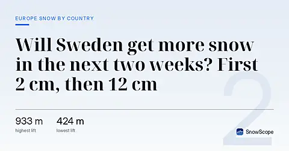
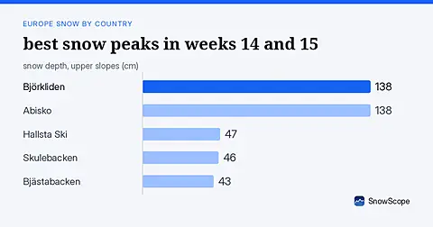

Sweden snow report: snow depth, new snow and the week ahead
In Sweden about 313,460 km² of high ground is white today, 96 % of the country's mapped mountains and hills. That is about the same as yesterday. The deepest resort is Björkliden with 137 cm on its upper slopes. Up to 16 cm of new snow could fall on the snowiest slopes in the week ahead.
See the live snow forecast for Björkliden in the SnowScope appSnow depth, powder alerts and the 3D map, free.Today at a glance
| White area | 313,460 km² |
|---|---|
| Share of the high ground | 96 % |
| Most new snow in 24 h | 0 cm |
| Most new snow in 3 days | 2 cm |
| Next 3 days (snowiest slopes) | 3 cm |
| Next 7 days | 16 cm |
| Mostly white from | 0 m |
| Resorts with snow on top | 74 of 75 |
The last seven days
On 20 November about 293,780 km² was white; today it is 313,460 km².
The snow cover grew by 19,680 km² over these days.
The biggest three-day snowfall of the period reached 21 cm (to 20 November).
This season against a normal year
4 of the 5 deepest resorts are above their usual snow depth for 26 November.
Björkliden: 49 cm at about 678 m, a normal year has 49 cm; Abisko: 35 cm at about 652 m, a normal year has 31 cm; Skulebacken: 32 cm at about 162 m, a normal year has 6 cm; Bydalsfjällen: 42 cm at about 792 m, a normal year has 28 cm; Gräftåvallen: 30 cm at about 711 m, a normal year has 24 cm.
These depths are for one height on each mountain, below the top.
In past winters the best snow at Björkliden usually came early April / mid-April.
Snowiest resorts today
Björkliden leads with 137 cm on its upper slopes.
Then come Abisko (137 cm), Skulebacken (50 cm), Bydalsfjällen (46 cm) and Gräftåvallen (45 cm).
| Resort | Upper slopes | New, 3 days | Next 3 days | Top |
|---|---|---|---|---|
| Björkliden | 137 cm | 2 cm | 2 cm | 933 m |
| Abisko | 137 cm | 1 cm | 1 cm | 902 m |
| Skulebacken | 50 cm | 0 cm | 0 cm | 286 m |
| Bydalsfjällen | 46 cm | 0 cm | 0 cm | 1,002 m |
| Gräftåvallen | 45 cm | 0 cm | 0 cm | 765 m |
Where the snow is coming next
Up to 3 cm is expected on the snowiest slopes in the next three days, and up to 16 cm over the week.
The snowiest day looks like Thursday 3 December, with up to 11 cm.
The last three days brought the most fresh snow to the Lapland fjells.
The second week could add up to 22 cm where it snows most.
Snow by height
Height by height: 0-500 m: 16 cm on average, 95 % white; 500-1,000 m: 17 cm on average, 100 % white; 1,000-1,500 m: 43 cm on average, 100 % white; 1,500-2,000 m: 67 cm on average, 100 % white.
Most of the ground is white from about 0 m up.
Planning a trip
Above 0 m the ground is almost fully white (95 % covered), so runs up there have a continuous base.
The resorts with the highest lifts are the safest bet: Bydalsfjällen (1,002 m), Björkliden (933 m) and Abisko (902 m).
Day by day
- Thursday 26 November · 313,460 km² white, up to 2 cm of new snow in three days, deepest Björkliden (137 cm)
- Wednesday 25 November · 313,930 km² white, up to 5 cm of new snow in three days, deepest Björkliden (138 cm)
- Tuesday 24 November · 312,550 km² white, up to 10 cm of new snow in three days, deepest Björkliden (138 cm)
- Monday 23 November · 311,330 km² white, up to 14 cm of new snow in three days, deepest Björkliden (139 cm)
- Sunday 22 November · 314,500 km² white, up to 13 cm of new snow in three days, deepest Björkliden (136 cm) · Will Sweden get more snow in the next two weeks? First 2 cm, then 12 cm
- Saturday 21 November · 311,680 km² white, up to 15 cm of new snow in three days, deepest Björkliden (138 cm) · Björkliden leads Sweden with 138 cm: best snow peaks in weeks 14 and 15
- Friday 20 November · 293,780 km² white, up to 21 cm of new snow in three days, deepest Björkliden (140 cm) · Where the ground turns white in Sweden: snow from sea level upward
Questions and answers
Is there snow in Sweden right now?
Yes. About 313,460 km² of high ground is white, 96 % of the mapped mountains. The deepest resort is Björkliden with 137 cm on its upper slopes.
Where is the most snow in Sweden today?
Björkliden leads with 137 cm on its upper slopes. Then come Abisko (137 cm), Skulebacken (50 cm) and Bydalsfjällen (46 cm).
Will it snow in Sweden this week?
Up to 3 cm is expected on the snowiest slopes in the next three days, and up to 16 cm over the week. The snowiest day looks like Thursday 3 December, with up to 11 cm.
From what height is there snow in Sweden?
Most of the ground is white from about 0 m up.
How much new snow fell in Sweden in the last three days?
Up to 2 cm on the snowiest slopes, 0 cm of it in the last 24 hours. At least 5 cm fell over some 200 km². The last three days brought the most fresh snow to the Lapland fjells.
How many ski resorts in Sweden have snow?
74 of the 75 resorts we follow have snow on their upper slopes today. Snow on top does not mean the lifts are open: check the resort before you go.
When is the best time to ski in Sweden?
In past winters the best snow at Björkliden usually came early April / mid-April.
Is the season off to a good start in Sweden?
4 of the 5 deepest resorts are above their usual snow depth for 26 November.
Stories about Sweden

Sweden's snow cover stands at 314,500 km² on 22 November. SnowScope shows 2 cm in week one, then 12 cm in week two, with mountain peaks already holding 66 cm.

Sweden's snow cover reaches from sea level across 90 percent of the mapped area on November 20. Heights above 1000 m hold 42 cm average depth.

Björkliden has 138 cm today. Sweden averaged 95 cm across measured resorts. Snow depth peaks in mid-April (weeks 14–15). Data from 21 November 2026.